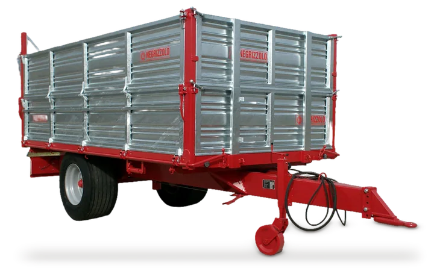
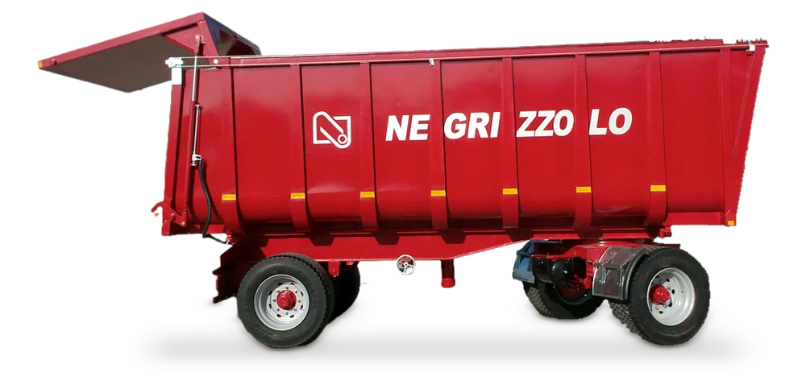
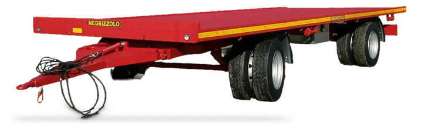
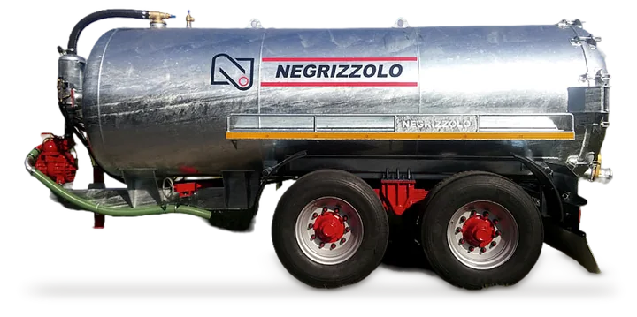
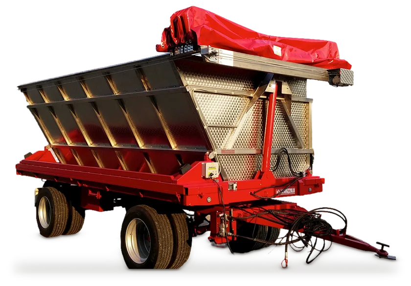
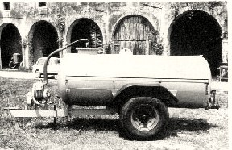
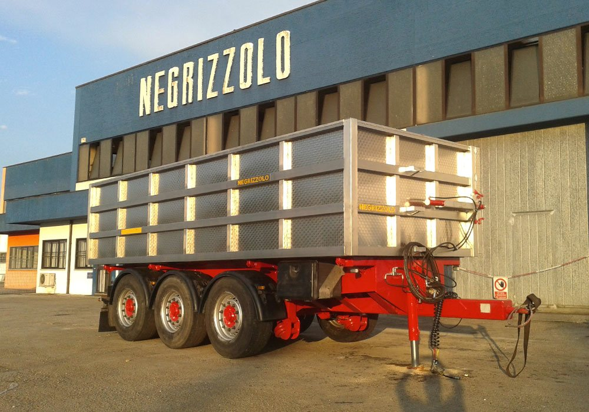

Rimorchi ribaltabili
Dumper o con sponde, da un asse centrale a tre assi.

Dagli anni '50 a Grisignano di Zocco, i primi in Veneto a costruire cisterne e carribotte.
Scegliete la portata: sotto compaiono i modelli a listino. Tutti certificati CE e omologati per la circolazione stradale, e ogni macchina si può personalizzare.
Portata in quintali

Dumper o con sponde, da un asse centrale a tre assi.

Con o senza rampe, con o senza sponde, lunghi fino a 10,5 m.

Zincati, a struttura autoportante. 13 modelli, da 14 a 250 hl.
Applicazioni speciali: idrosemina, digestato, aspira-foglie, cassone scarrabile
La costruiamo su misura e la montiamo sul rimorchio che avete già, anche usato. A scarico laterale o posteriore, si smonta a fine vendemmia.

Ripariamo macchine agricole di ogni marca, con la precisione e la rapidità che ci distinguono da decenni.
Veloce ed efficiente, per un fermo macchina ridotto al minimo.
Dal pezzo singolo alla grande serie. Pezzi singoli e piccole serie in otto ore lavorative, poi piegatura, cesoiatura, saldatura e montaggio.
Disegni e richieste: laser@negrizzolo.it

Prima fabbri e maniscalchi. A metà degli anni '50 Riccardo Negrizzolo apre la ditta, la prima in Veneto a costruire cisterne e carribotte; all'inizio degli anni '60 arrivano i rimorchi. Dalla fine degli anni '80 c'è Giovanni, dal 2000 suo figlio Paolo.
2.000mq coperti5.000mq di piazzale
Telefono e fax
